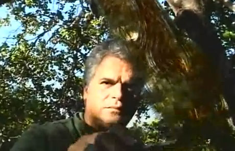
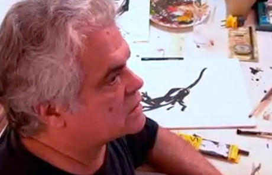
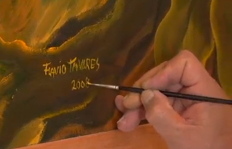
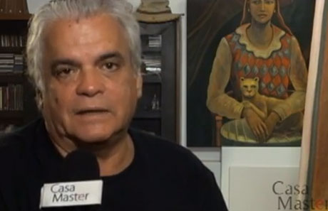
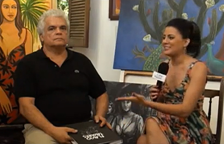
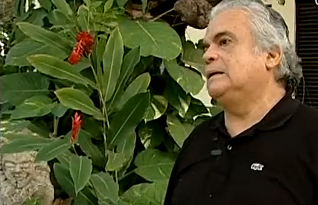
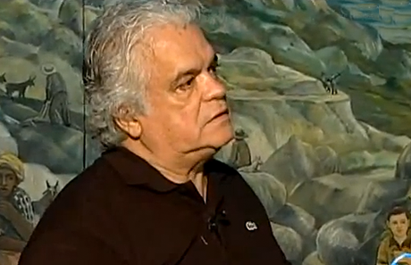
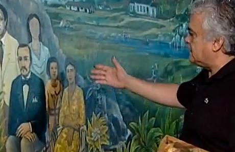
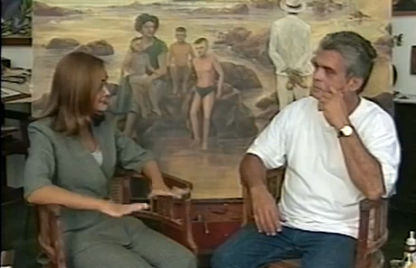

O Caçador de Miragens: Flávio Tavares
Vídeo de Elisa Cabral, 2002 – 10 minutos
O fantástico universo pictórico do artista plástico paraibano Flávio Tavares, onde cores, traços, tons e ritmos se contrapõem na dinâmica dos gestos criativos.

Flávio Tavares – João Pessoas – Parte 1
João Pessoas, a Memória da Cidade. 2008.
Primeira parte do documentário com o artista plástico paraibano Flávio Tavares.

Flávio Tavares – João Pessoas – Parte 2
João Pessoas, a Memória da Cidade. 2008.
Segunda parte do documentário com o artista plástico paraibano Flávio Tavares.

Entrevista para o Programa Casa Master Parte 1
Programa Casa Master, 2011
Entrevista com o artista plástico paraibano Flávio Tavares ao programa Casa Master. Uma conversa agradável com muita história, cultura e arte.

Entrevista para o Programa Casa Master Parte 2
Programa Casa Master, 2011
O artista plástico Flávio Tavares apresenta o livro homônimo que comemora os 50 anos da sua trajetória artística com muitas fotos de pinturas, desenhos e gravuras.

Contemporâneo – Flávio Tavares – Bloco 01
Programa Comtemporâneo, 2012
Entrevista em 3 blocos para o programa Comtemporâneo. Primeira parte.

Contemporâneo – Flávio Tavares – Bloco 02
Programa Comtemporâneo, 2012
Entrevista em 3 blocos para o programa Contemporâneo. Segunda Parte.

Contemporâneo – Flávio Tavares – Bloco 03
Programa Comtemporâneo, 2012
Entrevista em 3 blocos para o programa Contemporâneo. Terceira parte.

Flávio Tavares – 50 Anos – Paraíba Meio Dia
Paraíba Meio Dia, 2000
Matéria do programa Paraíba Meio Dia com o artista plástico paraibano Flávio Tavares.